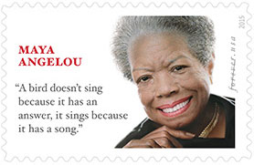
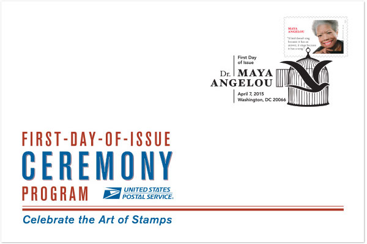
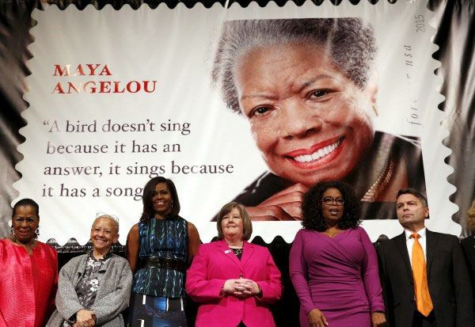
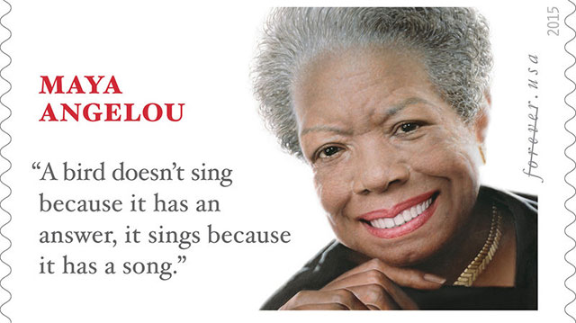
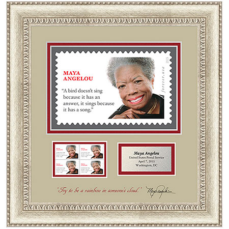
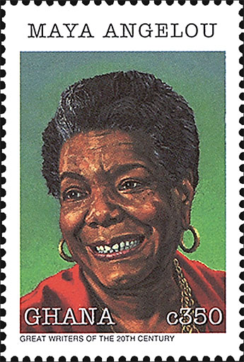
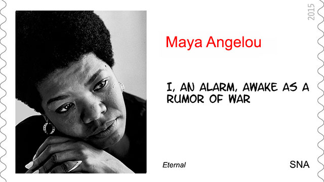

| Published:
04/26/2015. Revised: 04/27/2015.
Copyright © 2015 by Victor Manta, Switzerland. All rights reserved worldwide. |
|
THE DR. MAYA ANGELOU STAMP BLUNDER, BY USPS
The stamp collectors still remember the Statue of Liberty blunder of the USPS, a forever coil stamp issued Dec. 1, 2010 in billions of copies. On the page Viva Las Vegas I largely commented then on the Las Vegas replica that replaced on the stamp the famous New York City harbor original.
Celebrating the Art on Stamps (see the image of the FDC below), USPS erred again on a new forever stamp that was issued April 7, 2015 to honor the memory of the author Dr. Maya Angelou. The phrase quoted on the stamp (“A bird doesn't sing because it has an answer, it sings because it has a song.”) was misattributed. It actually appears on page 15 in the book “A Cup of Sun,” by Joan Walsh Anglund, copyrighted 1967.

You can find out more about this stamp and about the celebrated author from the press excerpts that were recently published on the web, and which I compiled below. I was rather amazed by the plethora of Dr. Maya Angelou's talents, the extent of the stamp issue celebrations and the high profile of falsely quoting personalities, things that I learned about from these excerpts.
Last but not least, I present toward the end of the page a stamp that correctly quotes from Dr. Maya Angelou.
United States Postal Service Notice
Author, poet, actress, and champion of civil rights Dr. Maya Angelou (1928-2014) was one of the most dynamic voices in all of 20th-century American literature. The book I Know Why the Caged Bird Sings, an autobiographical account of her childhood, gained wide acclaim for its vivid depiction of African-American life in the South.

The stamp showcases artist Ross Rossin's 2013 portrait of Dr. Angelou. The oil-on-canvas painting is part of the Smithsonian National Portrait Gallery's collection. In the bottom left corner is the following phrase quoted by Dr. Angelou: “A bird doesn't sing because it has an answer, it sings because it has a song.” Above the quotation is her name in black type. The words “Forever” and “ USA ” are along the right side. Source

People stand on stage during the Maya Angelou Forever stamp dedication ceremony in Washington on April 7, 2015. Onstage are Howard University Professor Eleanor Traylor (left to right), writer Nikki Giovanni, first lady Michelle Obama, Postmaster General Megan Brennan, Oprah Winfrey and artist Ross Rossin.
From Chicago Tribune
The exact quote — the one that appears on the Angelou forever stamp — also appears on Page 15 in the book “A Cup of Sun,” by Anglund, copyright 1967.
According to Postal Service spokesman Mark Saunders, the post office's research team said the quote had “come up in different media interviews Maya Angelou had done” and that using it had been approved by her family members. He didn't know which ones.

Last year, in remarks at the presentation of the 2013 National Medal of Arts and National Humanities Medal, President Barack Obama attributed the quote to Angelou:
“The late, great Maya Angelou once said, ‘A bird doesn't sing because it has an answer, it sings because it has a song.' Each of the men and women that we honor today has a song literally — in some cases. For others, it's a talent, or a drive, or a passion that they just had to share with the world.” SourceWikipedia
Maya Angelou born Marguerite Annie Johnson ; April 4, 1928 – May 28, 2014, was an American author, poet, dancer, actress, and singer.
She became a poet and writer after a series of occupations as a young adult, including fry cook, prostitute, nightclub dancer and performer, cast member of the opera Porgy and Bess , coordinator for the Southern Christian Leadership Conference, and journalist in Egypt and Ghana during the decolonization of Africa .
With the publication of I Know Why the Caged Bird Sings, Angelou publicly discussed aspects of her personal life.
She did not earn a university degree, but according to Gillespie it was Angelou's preference that she be called "Dr. Angelou" by people outside of her family and close friends (author's note: what I did).

Angelou wrote a total of seven autobiographies. … She was a prolific writer of poetry; her volume Just Give Me a Cool Drink of Water 'fore I Diiie (1971) was nominated for the Pulitzer Prize, and she was chosen by President Bill Clinton to recite her poem "On the Pulse of Morning" during his inauguration in 1993. … Angelou's lack of critical acclaim has been attributed to both the public nature of many of her poems and to Angelou's popular success, and to critics' preferences for poetry as a written form rather than a verbal, performed one. … Angelou's books, especially I Know Why the Caged Bird Sings, have been criticized by many parents, causing their removal from school curricula and library shelves. Source
Linn's
This will not be the first stamp to honor the author and poet, the West African nation of Ghana commemorated her on a stamp issued 17 years ago.
Angelou had lived in Ghana from 1962 through 1967.
.

The 350-cedi stamp showing a portrait of Angelou was issued by Ghana March 25, 1998, according to the Scott Standard Postage Stamp Catalogue, in a pane of six. Source
SNA 2015 Stamp Issue
This eternal stamp was issued April 24, 2015 by the Spanish North Africa Postal Administration. It is the first eternal stamp ever issued by SNA.

The print run was of 10 million copies. Don't try to find any of them because they already arrived to their proud owners.
The excerpt quoted on the SNA stamp is taken from the poem: Awaking in New York, by Dr. Maya Angelou.
| Published:
04/26/2015. Revised: 04/27/2015.
Copyright © 2015 by Victor Manta, Switzerland. All rights reserved worldwide. |
|